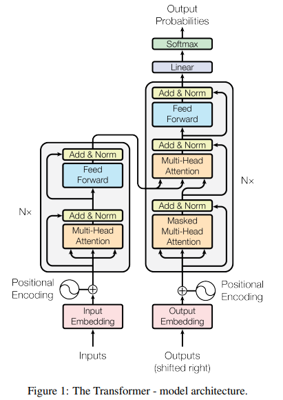

一。前言
反复观看三四遍视频仍未真正理解 Transformer 模型的我 觉得有必要开一篇博客详细地记录一下学习过程了。问其费这么大心思学习 Transformer 的理由有二：
-
目前实习公司派的任务都是一些爬取数据的活儿，虽然跟想象中的实验室有一些出入，但带我的学长还是反复强调，让我好好康康
Transformer这个模型。这里的康康肯定就是不仅局限于最baseline的 那篇论文，而是需要广泛了解它的一些变种。这个我会放在【学习笔记（下】来介绍。（如果能写得到那里的话 -
Transformer模型现如今已经完全不局限于NLP任务，而是推广至一系列序列生成式任务中（如图片、音乐等）。虽然其原理仍然是利用前面的词语预测后面的词语内容，但它利用矩阵乘法的可并行性特点，可以一次预测整个序列，这个是可以用 GPU/TPU 很快 Train 出来的。就连作者本人所说：“至于 Transformer 的局限性，我不知道它是否会被淘汰，但现在谈论这个问题还很早。与它未来的潜力和要进行的大量工作相比，目前已经完成的工作可能不算什么。……每个人都刚刚意识到这个东西是非常有价值的，我认为它只会越来越好。”
综上所述，我深感有必要把 Transformer 这个模型搞懂了。本篇博客会简单介绍一下其前世 RNN 及其变种，并解释其缺陷；之后我们会基于 Attention is all you need 这篇神级 paper，讲讲自注意力机制、Transformer 的 Encoder-Decoder 结构；学习笔记下篇，我们会找一些变种的博客，展开进一步学习。
二。RNN & LSTM
我们不妨从最简单（？）的一类 NLP 任务 — — 机器翻译谈起，即假设输入一个单词，输出其中文意思。这个甚至弄一个字典查表就行。
但是涉及到句子的翻译，这种简单粗暴的方法就不能用了。
第一句话：I like eating apple！（我喜欢吃苹果！）
第二句话：The Apple is a great company！（苹果真是一家很棒的公司！）
** 究其原因，是因为我们没有考虑到词汇的上下文。** 为了解决需要考虑上下文的序列性任务，我们便引入了循环神经网络（RNN）。其结构如下图：

排除循环层，RNN 就只有一个全连接的神经网络。而循环层 可以视为记忆神经层。对于时刻 t 的输入 来说，我们将其与隐藏层全连接更新参数的时候还会带上时刻 时刻所得到的隐藏层输出 ，二者一齐决定当前时刻隐藏层的输出 ，并从而更新输出层的权值 . 同时，隐藏层的得到的参数 会重新用来更新记忆层 ，并用以下一次的自我更新。
这样的话，对于每一时刻的输入，我们就能考虑到序列之前的所有信息。当然，这样也存在一定缺陷：首先是 RNN 只能考虑当前输入的所有上文而没有下文。这个可以用 双向RNN 的模型去解决：

除此之外，RNN 未免过于 Simple 了，我们利用所有的输入去更新记忆层，并且会在所有时刻都利用记忆层更新参数，这也会导致梯度消失以及梯度爆炸。我们会倾向于能够更有效地控制 Memory 层的读取与更新，因此引入了长短期记忆（LSTM）。
对于每一个记忆神经元，它的 memory 具有三个 gate：
- 首先如果想被写入 LSTM，首先要通过
input_gate； - 如果想从 memory 读出值，必须通过
output_gate； - 最后有一个
Forget_gate决定什么时候把 memory 给忘掉。

控制三个 gate 的参数都是通过 Training Data 学到的，然后通过 sigmoid 函数决定他的开启/关闭状态。将我们的所有输入乘上不同组的权重，当做不同 gate 的参数进行判断，就得到了不同 LSTM 的状态。因此相较于 RNN 的记忆层，他需要其四倍的参数。
虽然 LSTM 比一般 RNN 的效果要好，但其本质的思想还是基于序列的时序性过程，没法做到同时考虑整个 Seq 的资讯；而且 LSTM 的参数很多，这导致训练起来就很慢；虽然门控机制解决了梯度消失/梯度爆炸的问题，但是其接收上下文的记忆仍然是有限的。这要求我们找一种更好的模型。
三。注意力机制 & Transformer
Self-Attention 可以同时考虑整个 Seq 的资讯，每一个位置对应着输出一个向量；然后再将该向量丢进一个 Fully-Connected Network 中，即可得到最终的结果。当然，也可以叠很多层，加深对语料的理解.
那么问题是输入 是如何通过 Self-Attention 层，得到一个考虑整个 Seq 资讯的向量 呢？我们考虑每一个位置的输入 与另一位置 的关联程度，加权累和即可。具体来说，对于每一个位置 我们都设置三组参数 ，其含义如下图：

那问题是，感觉只是换了一种时序迭代的方式，这样为啥就能解决 RNN 的问题呢？事实上，一组 是可以被同时算出来的！只要利用矩阵乘法的思想，就可以直接学出来这一套参数了：
当然，这里的相关性可能只是某一方面的相关性（看 training data 吧），**如果想从多个种类去考究数据的相关性，我们需要引入 multi-head Self-Attention。**实际上就是把上面那几个参数 扩大一倍罢辽）。
当然，如果要处理序列信息，位置的资讯是必不可少的。 而自注意力机制并没有涉及位置的资讯，因此需要我们手动给他加上一个函数生成的位置资讯。【那篇论文】使用的是 sin/cos 去生成该资讯，但也可以用别的函数、也可以让模型自己 Learn 。
接下来，我们通过【那篇论文】，学习所谓的 Transformer 模型。Transformer 是一种基于自注意力机制的模型，它可以做到在一层中学习整个序列的信息，并且通过多头的机制学习进行多通道的输出，识别多种模式。
其模型架构是比较经典的 encoder-decoder，将输入 先通过编码器转化为对应 token 的新编码，改编码包含了输入 token 的上下文信息；之后再将该编码通过解码器输出 ，这个过程利用了 自回归 的方法，使得每个位置的输出依赖于先前的输出。

1. Encoder（编码器）
如上图所示，Encoder 是一个叠了 n 层 transformer 块，每个块中都包含了一个多头自注意力层，以及一个前馈神经网络层；每层都套了残差连接 和 层标准化（Layer Normalization）。
不同于操作每一列 feature 数据的批标准化，采用层标准化的方式可以较好地处理不同 Seq 长度造成均值方差变化剧烈的问题。
而第二层的前馈神经网络，本质上就是一个全连接层。由于涉及序列的信息已经在多头自注意力层被学习到了，那么之后的工作只需要将每一个位置加工成我需要的语义空间上的向量即可。
2. Decoder（解码器）
Decoder 与 Encoder 不同的地方在于，在每一个块儿的开头都加上了一个 Masked 多头自注意力层，这也是为了使得每个位置的输出仅依赖于先前输出的内容。
具体来说，对于第 t 时刻的 ，如果只允许考虑 的因素，只需要在算出 要计算权重的时候， 把 t 时刻后面的值替换为一个很大的负数，这样做 softmax 的时候就会趋于 0 了。
而解码器的第二层也并非是自注意力层，他的 Key-Value 来源于编码器的输出，而 Query 来自于解码器之前的输出：这可以看做是 Transformer 会在解码器已经获得内容的基础之上，根据编码器输出的知识，去预测解码器下一个 token。